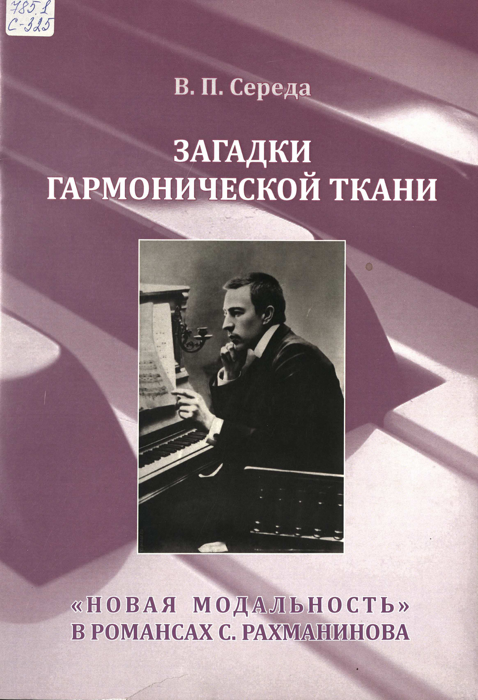
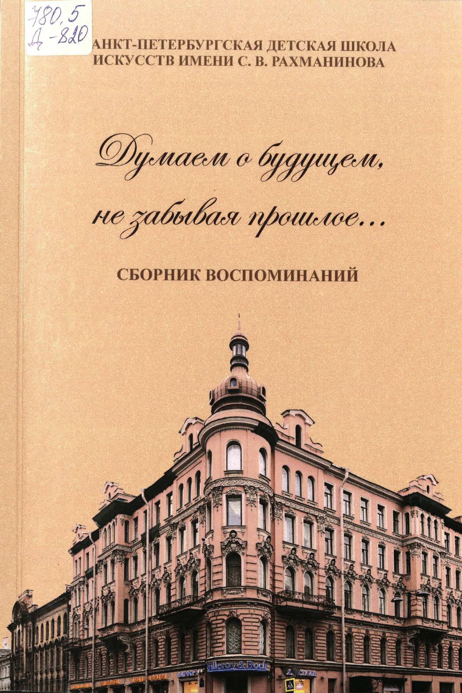

Читальный зал

Середа В.П. Загадки гармонической ткани: "новая модальность" в романсах С. Рахманинова:
к 140-летию со дня рождения Сергея Васильевича Рахманинова (1873-1943)
/ В.П. Середа; [ред. И.Н. Вановская]; Музей-усадьба С.В. Рахманинова "Ивановка".
- Тамбов : Издательство Першина Р.В., 2013. - 78 с.: ил., нот., портр., фот.
ISBN 978-5-91253-474-4.

Думаем о будущем, не забывая прошлое..: сборник воспоминаний /
сост. Ю.А. Минкина, В.Н. Аранышева; ред. И.Н. Вановская, ред. коллегия:
В.Б. Валькова [и др.]; Санкт-Петербургская детская школа искусств имени
С.В. Рахманинова, Музей-усадьба С.В. Рахманинова "Ивановка".
- Тамбов : Музей-усадьба С.В. Рахманинова "Ивановка", 2018. - 94 с.:
ил., портр., фот., цв. ил. Свед. об авт.: с. 91-95.
ISBN 978-5-9909670-8-3.
 Захаров, Андрей Александрович. Концерт : для скрипки и фортепиано /
Андрей Захаров ; редактор И. Н. Вановская ; Музей-заповедник С.В. Рахманинова
"Ивановка". - Тамбов : Музей-заповедник С.В. Рахманинова "Ивановка", 2022. - 24 с.,
1 парт. (8, с.): цв. портр. Тит. л. и сведения перед нот. текстом парал. рус., англ.
ISMN 979-0-9003366-6-8.
Захаров, Андрей Александрович. Концерт : для скрипки и фортепиано /
Андрей Захаров ; редактор И. Н. Вановская ; Музей-заповедник С.В. Рахманинова
"Ивановка". - Тамбов : Музей-заповедник С.В. Рахманинова "Ивановка", 2022. - 24 с.,
1 парт. (8, с.): цв. портр. Тит. л. и сведения перед нот. текстом парал. рус., англ.
ISMN 979-0-9003366-6-8. Сафонов, Василий Ильич. Фуга : : fis-moll : для учащихся детских музыкальных школ:
(написана в 1879) / Василий Сафонов ; переложение для фортепиано в 4 руки
[и вступительная статья] М. Бирюкова ; редактор И. Н. Вановская ;
Музей-заповедник С. В. Рахманинова "Ивановка". - Тамбов : Музей-заповедник
С.В. Рахманинова "Ивановка", 2021. - 15, [1] с. : портр., факс.
ISMN 979-0-9003366-1-3.
Сафонов, Василий Ильич. Фуга : : fis-moll : для учащихся детских музыкальных школ:
(написана в 1879) / Василий Сафонов ; переложение для фортепиано в 4 руки
[и вступительная статья] М. Бирюкова ; редактор И. Н. Вановская ;
Музей-заповедник С. В. Рахманинова "Ивановка". - Тамбов : Музей-заповедник
С.В. Рахманинова "Ивановка", 2021. - 15, [1] с. : портр., факс.
ISMN 979-0-9003366-1-3. Бирюков, Максим Евгеньевич. Деревенские невелички = Village miniatures:
альбом фортепианных пьес средней трудности : для учащихся музыкальных школ /
Максим Бирюков; Музей-усадьба С.В. Рахманинова "Ивановка". - Тамбов:
Музей-усадьба С.В. Рахманинова "Ивановка", 2019. - 34, [1] с.
С предисл. от авт. - Тит. л., обл., сведения перед нот. текстом и содерж.
парал. рус., англ. Предисл. рус. ISMN 979-0-9003245-6-6.
Бирюков, Максим Евгеньевич. Деревенские невелички = Village miniatures:
альбом фортепианных пьес средней трудности : для учащихся музыкальных школ /
Максим Бирюков; Музей-усадьба С.В. Рахманинова "Ивановка". - Тамбов:
Музей-усадьба С.В. Рахманинова "Ивановка", 2019. - 34, [1] с.
С предисл. от авт. - Тит. л., обл., сведения перед нот. текстом и содерж.
парал. рус., англ. Предисл. рус. ISMN 979-0-9003245-6-6.